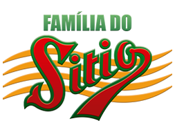

|  | |
|---|---|
SOBRE NÓS |
| A história do Café se confunde com a de Brasília. Antônia e Teones Barbosa de Souza, que compraram a fábrica em 1967, foram pioneiros e se instalaram no Núcleo Bandeirante nos primeiros anos da capital federal. A família de Teones trabalhava com moagem de café e farinha em Pernambuco, e essa experiência o incentivou a adquirir o Café do Sítio.Desde o começo, Teones fez questão de utilizar o grão de maior qualidade na fábrica. Não sucumbia aos argumentos que de outra matéria prima poderia baratear os custos de produção. A visão e o perfil enérgico deste pernambucano levaram à consolidação e à expansão da marca. Os valores passados por ele seguem direcionando a atuação da empresa. |